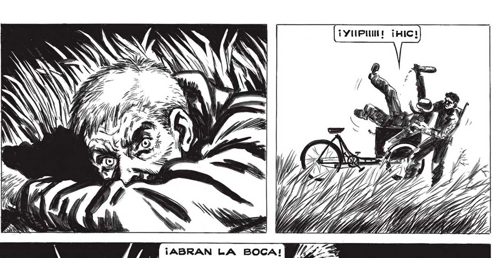
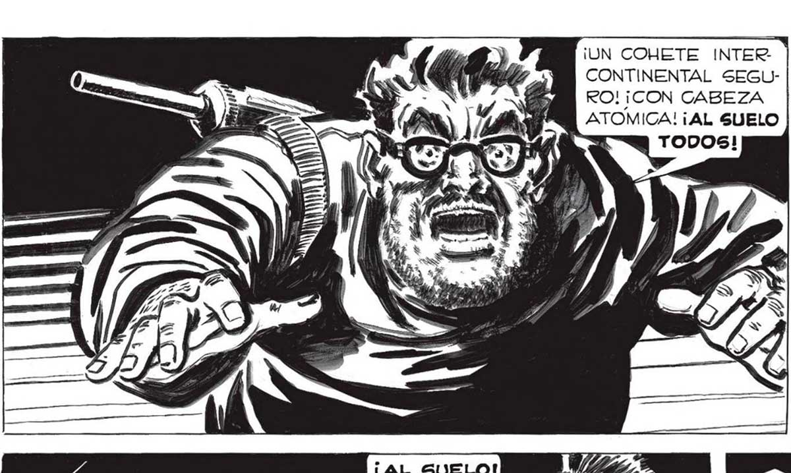
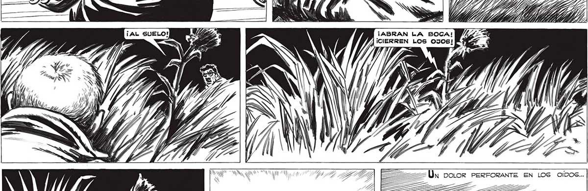

2399 ¡UN COHETE INTER CONTINENTAL SEGURO! ¡CON CABEZA ATOMICA! ¡AL SUELO ¡ABRAN LA BOCA! / ¡CIERREN LOS OJOS! —_ LS ii A Un Dolor PERFORANTE EN LOS OIDOS... JUE qu Mis Y A 7 Si ; OS Ñ N SI ASIN NN x Ps Ú S y : | , o O NY ' AS SS AN Ñ X CON FIJEZA DE PESADILLA.


